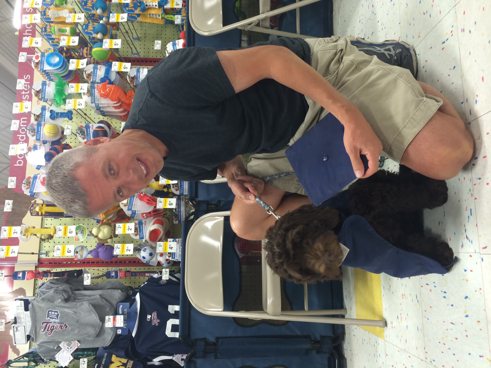
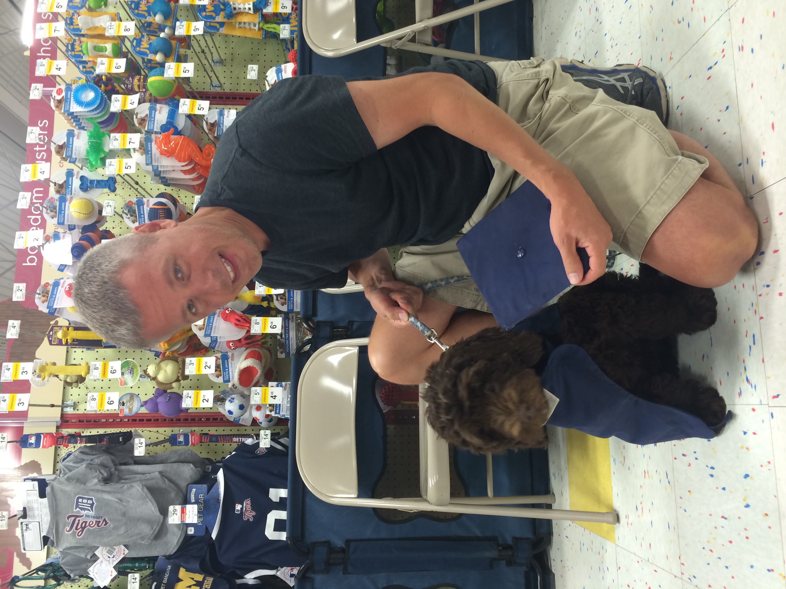

Buddy
Description
Buddy is a good boy. He's 16 years old, which is very old for a dog, but Buddy is very stubborn. When he was younger, his face wasa a lot more brown, but today it's more gray and faded. He barks very often, but he has never been a mean dog by any means.
Likes
- Pizza Crust
- Scratches behind the ear
- Barking
Marcello
Description
Marcello is the dog of a relative of mine. Marcello is a small black and gray dog (I do not know the breed). This dog is very spoiled. He eats the leftovers of the dinner eaten the night before b his owner, and he can't eat the same food twice in a row. Marcello is very energetic and friendly.
Likes
- Chewing on water bottles
- Steak
- Races
Mystery

Description
Mystery is not the name of this dog. I just don't know the name of this dog, so we'll call him/her Mystery. Mystery was in front of a shop in Erice, Sicily. This shop selled knick knacks, and he was just standing in the entrance. Was it the guard of the shop? I do not know. Mystery was very calm and stoic. A good boy I presume.
Likes
- People
- Pictures
- Full paying customers
Bruno

Description
Bruno is the dog of a relative of mine. He was the son of their previous dog, so the bloodline continues. Bruno was raised to be a hunting dog, helping to chase out rabbits for hunting. He is a very graceful and obidient dog, however he has a humping problem unfortunately.
Likes
- Rabbits
- Howling
- People's legs
Bacon Q Dog

Description
Bacon Q. Dog is a 9yr old labradoodle. He prefers to spend his days lounging among the three different beds/couches that his family has gifted him. He enjoys a walk or two around the neighborhood, as long as he can pretend that he doesn't see any of the other animals to avoid the embarrassment of not wanting to admit he has no wolf-like skills in chasing them.
At night just as the rest of the family is ready to relax, Bacon suddenly wants to release all of his energy. He will place his toys on a mini couch and frantically drag the couch around, giving his toys "a ride." There is also a lot of rolling. Lots and lots of rolling.
Photo Gallery
 


Likes
- Belly rubs
- Playing tug-of-war
- Sneaking onto the couch